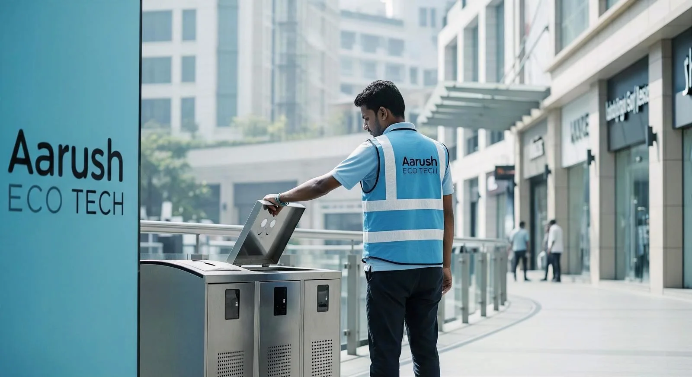
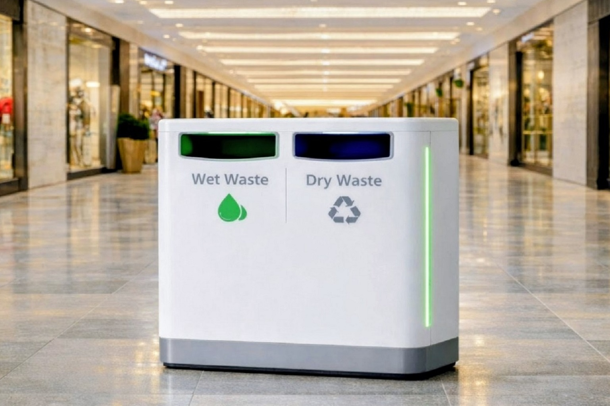
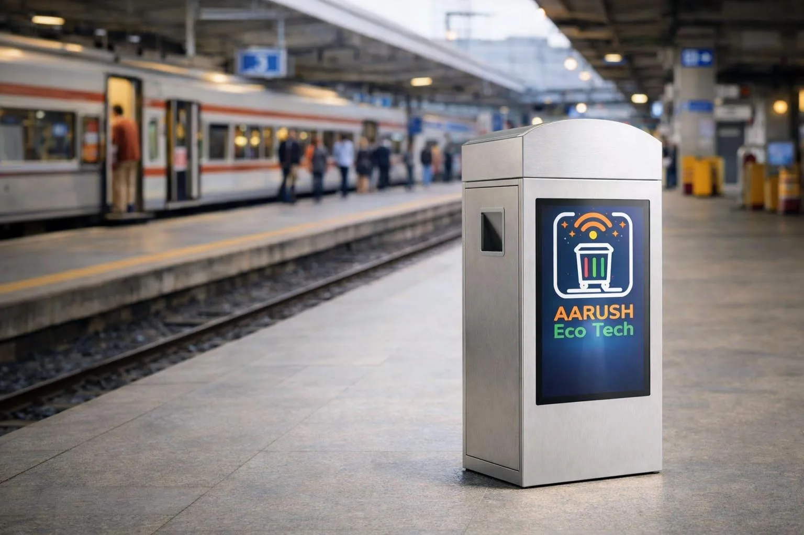

Smart Waste Infrastructure preventing overflow by 85% in pilot deployments — delivering real-time audit-ready ESG intelligence, with Zero Upfront Capital.
The Silent Pulse of Urban Infrastructure
Every day, cities move millions —
people, vehicles, energy, and water
And quietly, something else moves too.
Yet every waste system ultimately begins with
one overlooked piece of infrastructure
It has one job.
Keep the space clean.
It never could.
The problem isn't waste. It's infrastructure that was never built to handle it.
Placed for convenience. Not for demand. Missing where it's needed most.
No capacity for real-world load. Overflow isn't an exception. It's the design.
No sensing. No alerts. No data. The system operates without knowing what's happening.
This isn't about the bins.
It isn't about the waste.
It's infrastructure that was never built to handle operations reliably.
The problem isn't the bin. It's the absence of anyone responsible for the outcome — and an infrastructure that was never designed to deliver one.
This isn't about cleaning better. It's about having someone responsible for the outcome — at every moment.
✓ No dedicated waste ops team needed | ✓ No manual inspection rounds | ✓ No reactive firefighting
Just clean infrastructure — running continuously, reporting automatically.
No overflow. No guesswork. No wasted collections. Just a facility that works the way it should.
The bin never overflows. Collection happens before the problem is visible. Your space stays clean without anyone having to manage it.
Reduction in overflow incidents
Every bin. Every location. Every fill level — on your phone or desktop, right now. The system tells you what's happening before your team has to find out.
Centrally Monitored & Managed
Collections happen only when needed. Fewer trips. Less fuel. Lower labour. The savings show up in the first month's report.
Reduction in collection costs (pilot avg)
Workers move only when a bin actually needs service. No unnecessary contact with overflowing waste. Exposure down 40%. Dignity up — always.
Clean facilities make visitors feel safe and respected. Malls see higher dwell time, campuses get better reviews, cities earn public trust.
When the system handles operations autonomously, your team focuses on what matters. And your facility's reputation takes care of itself.

Workers move only when a bin actually needs service. No unnecessary contact with overflowing waste. Exposure down 40%. Dignity up — always.
No more walking rounds to check what the system already knows. Every bin reports its status continuously. Managers get confidence, not surprises. Audit-ready at any moment.
Smart Bins infrastructure built for facilities that require consistency, visibility, and audit-ready outcomes.
Tap a feature to see it reflected in the simulation. Each layer works autonomously — and feeds your ESG dashboard in real time.
Continuous depth sensing accurate to ±1 cm across any waste type. Customized readings, streamed live.
HardwareEvery collection event feeds 15 live KPIs — BRSR-mapped, auto-timestamped, audit-ready at any moment.
IntelligenceProvision of integrated photovoltaic cell with battery backup. Zero grid dependency — works in parking lots, outdoor venues, remote sites.
EnergyAt 80%+ capacity, automated alerts fire to managers and crews with GPS coordinates. No overflow. Ever.
AlertsEvery bin on the floor — visible, tracked, actionable. One fills at a time; the moment it hits 80% the AI auto-dispatches a collection vehicle. No overflow. Ever.
Everything above happens automatically. For sustainability and performance, we calculate 15 ESG KPIs from the same operational data — at no extra cost.
See the 15 KPIs →Waste infrastructure that delivers real-time, audit-ready environmental impact data — every metric tracked, verified, and BRSR-mapped.
Why this matters:
It turns cleanliness from an assumption into a measurable, reportable outcome.
Flexible commercial structures designed for different facility types and business objectives.
For: Malls, Airports, Transit Hubs

We deploy premium smart waste infrastructure in high-footfall environments — at no upfront cost. The system improves cleanliness while generating ongoing value for the property.
For: Corporate Campuses, IT Parks
Enterprise-grade smart waste infrastructure, delivered as a subscription. Built for large campuses needing predictable operations and compliance readiness.
For: Government, Municipalities

Infrastructure-grade smart waste systems designed for public environments and long-term ownership. Built to meet government procurement norms across high-footfall public spaces.
Piloted with BKE Limited, Shri Shyam Industries & DJG Enterprise — 85% overflow reduction observed across deployments. Now accepting new facility partners. Zero upfront cost.